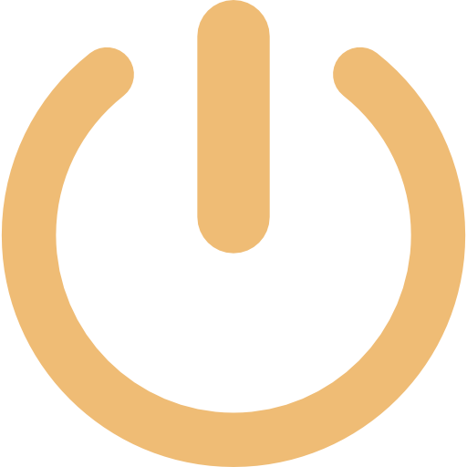

{% load static %}

<!DOCTYPE html>
<html>
    <head>
        <script src="https://ajax.googleapis.com/ajax/libs/jquery/3.7.1/jquery.min.js"></script>
        <script src="../../static/js/main.js" type="text/javascript"></script>
        <link rel="stylesheet" href="../../static/css/style.css">
        <style>
            main{
                text-align: center;
                width: 100%;
                color: black;
                height: 100vh;
                overflow: auto;
            }
            .message_zone::-webkit-scrollbar, .bar_app::-webkit-scrollbar{
                width: 12px;
            }
            .message_zone::-webkit-scrollbar-track, .bar_app::-webkit-scrollbar-track{
                background-color: #0E2C40;
                box-shadow: inset 0 0 5px rgba(0, 0, 0, 0.5);
                border-radius: 10px;
            }
            .message_zone::-webkit-scrollbar-thumb, .bar_app::-webkit-scrollbar-thumb{
                background-color: #EFBC75;
                border-radius: 10px;
            }
        </style>
    </head>
    <body>
        <meta name="csrf-token" content="{{ csrf_token }}">
    </body>
    <script>
        head("desktop");
        const csrfToken = document.querySelector('meta[name="csrf-token"]').getAttribute('content');

        let index = 0;
        function debug()
        {
            console.log(index);
            return index++;
        }


        let content_README = `
        <h3>Sito della Lista 1 - ITI G. Marconi</h3>
        <div>
            <p>
                Questo sito è stato creato con l'obiettivo di supportare gli studenti e migliorare la comunicazione all'interno dell'Istituto Tecnico Industriale G. Marconi. <br>
                Noi, come team di candidati rappresentanti d'istituto, vogliamo offrire un punto di riferimento digitale dove gli studenti possano trovare informazioni utili e strumenti di supporto allo studio.
            </p>
            <br>
            <h4>Funzionalità</h4>
            <ul style='margin-left:20px'>
                <li><strong>Changelog</strong>: Questa sezione permette agli studenti di rimanere aggiornati su tutte le novità e modifiche del sito. <br>
                    Ogni aggiornamento, miglioramento e nuova funzionalità viene documentato in modo trasparente per offrire una visione chiara dell'evoluzione del progetto.
                </li>
                <li><strong>Chatbot</strong>: Uno strumento utile per tutti gli studenti che cercano informazioni sull'istituto. <br>
                    Il chatbot è stato progettato per rispondere a domande frequenti riguardanti rappresentanti di istituto, eventi, scadenze, orari, e altro ancora. <br>
                    L'obiettivo è migliorare l'accessibilità delle informazioni e facilitare l'interazione con la scuola.
                </li>
                <li><strong>Library</strong>: Un archivio dedicato allo studio della programmazione. <br>
                    La Library è il cuore educativo del sito e attualmente include risorse per Python e C.<br> 
                    È organizzata per supportare sia principianti sia studenti avanzati, aiutando gli utenti a migliorare le proprie competenze di programmazione in modo progressivo.
                </li>
            </ul>
            <br>
            <h4>Obbiettivo lista</h4>
            <p>
                Il nostro obiettivo è rendere l'esperienza scolastica più interattiva e moderna, creando un ambiente online che faciliti l'accesso alle informazioni e favorisca l'apprendimento. <br>
                Siamo qui per supportare i nostri compagni di scuola e rappresentare al meglio le loro esigenze.    
            </p>
            <br>
            <h3>Authors</h3><br>
            Attività svolte da <strong>${add_partecipante("https://github.com/naga272", "../static/img/github.png", "Bastianello Federico", "github_icon")}</strong>:<br>
            - programmazione Front-end<br>
            - programmazione Back-end<br>
            - Creazione della sezione Library<br>
            - Scrittura delle lezioni per Library/C<br>
            <br><br>
            Attività svolte da <strong>${add_partecipante("https://github.com/Neetre", "../static/img/github.png", "Braga Mattia", "github_icon")}</strong>:<br>
            - Scrittura delle lezioni per python<br>
            - Scrittura delle lezioni per cpp<br>
            - Creazione ChatBot<br>
            <br><br>
            Attività svolte da <strong>${add_partecipante("https://github.com/Jettinder", "../static/img/github.png", "Jettinder Singh", "github_icon")}</strong>:<br>
            - Creazione della homepage con Parallax<br>
            <br><br>
            Attività svolte da <strong>${add_partecipante("https://github.com/Malasaur", "../static/img/github.png", "Silvio", "github_icon")}</strong>:<br>
            - Implementazione del chatbot<br>
            - Sviluppo back-end

            <br><br><br><br>
        </div>
        `;
        let content_CHANGELOG = `{{ chcontent }}`;

        var name_apps = [
            "Forum", 
            "CHANGELOG", 
            "README",
            "Library",  
            "ChatBot"
        ];
        var iconsBooks  = ["wbook", "bbook"];   // wbook = whitebook icon png; bbook = blackbook icon png (stessa cosa vale anche per le altre liste)
        var iconsMD     = ["wmarkdown", "bmarkdown"];
        var iconsForum  = ["wforum", "bforum"];

        _start("url('../static/img/background_desktop.jpg')");

        function _start(img)
        {
            /*
            * _start function, setta il front end per la homepage del forum
            * @img:str -> immagine bg del body
            */
            $("body").css({
                "background-image": img,
                "width" : "100%",
                "background-attachment":"fixed",
                "background-repeat" : "no-repeat",
                "background-position" : "absolute",
                "background-size": "cover",
                "overflow-x" : "none",
            });
            $("body").append("<div class='desktop'></div>");
            $("body").append("<div class='barra_applicazioni'></div>");

            $(".desktop").css({
                "width" : "100%",
                "height" : "94vh"
            });

            __init__desktopSublayer();
            __init__applicationBar();
        }


        function __init__desktopSublayer()
        {
            /*
            *   Funzione che contiene tutte le app del desktop.
            * */
            $(".desktop").append("<div class='sublayer_desktop'></div>");
            $(".sublayer_desktop").css({
                "margin-left" : "1vh",
                "margin-right" : "1vh",
                "display" : "flex",
                "flex-direction" : "column",
                "padding-top" : "1%",
            });

            // forum icon
            /*
            $(".sublayer_desktop").append(`
                <br>
                <a href='/forum'>
                    <div class='icon'>
                        <br>
                        ${name_apps[0]}
                    </div>
                </a>
                <br>
            `);
            */

            // library icon
            $(".sublayer_desktop").append(`
                <a href='/library'>
                    <div class='icon'>
                        <br>
                        ${name_apps[3]}
                    </div>
                </a>
                <br>`
            );

            // CHATBOT icon
            $(".sublayer_desktop").append(`
                <a onclick='new_gui(\"ITI G. Marconi Chat Assistant\")'>
                    <div class='icon'>
                        <br>
                        ${name_apps[4]}
                    </div>
                </a>
                <br>
            `);

            // CHANGELOG icon
            $(".sublayer_desktop").append(`
                <a onclick='new_gui(\"CHANGELOG\")'>
                    <div class='icon'>
                        <br>
                        ${name_apps[1]}
                    </div>
                </a>
                <br>
            `);
            
            // README icon
            $(".sublayer_desktop").append(`
                <a onclick='new_gui(\"README\")'>
                    <div class='icon'>
                        <br>
                        ${name_apps[2]}
                    </div>
                </a>
                <br>
            `);

            // cambio i colori dei link
            $(".sublayer_desktop > a").css({
                "width" : "70px",
                "cursor" : "pointer",
                "text-align": "center",
                "color" : "#fff",
                "font-size" : "1.2em"
            });
        }


        function __init__applicationBar()
        {
            /*
            *   Funzione usata per la gui della bottombar
            */
            // var name_apps = ["Forum", "Library", "CHANGELOG", "README"];            
            $(".barra_applicazioni").css({
                "width" : "100%",
                "height" : "4vh",
                "background-color" : "#0E2C40",
                "display" : "flex",
                "flex-direction" : "row",
                "padding-top" : "2vh",
                "color" : "#EFBC75",
                "font-size" : "1.2em",
                "z-index" : "1000"
            });


            $(".barra_applicazioni").append(`
                <div style='margin:0 auto; display:flex; flex-direction:row;'>
                    <a onclick='settings()' style='cursor:pointer;'>
                        <div class='icon'>
                            
                        </div>
                    </a>
                    <div style='width:200px; margin-left: 10px'>
                        ${new Date().toDateString()}
                    </div>
                </div>
            `);
        }


        let index_setting = 0;
        function settings()
        {
            /*
            *   Funzione usata per la sezione settings del desktop.
            *   Consente la creazione della gui con l'elenco e la ricerca delle app.
            **/
            $("#settings_gui").remove(); // evito la sovrapposizione della gui settings
            if (index_setting === 0){
                $(".desktop").append("<div id='settings_gui'></div>");
                
                console.log(window.innerWidth);
                $("#settings_gui").css({
                    "position" : "absolute",
                    "width" : (window.innerWidth >= 1000)? "40%" : "80%",  
                    "height" : "55%",
                    "background-color" : "rgb(240, 240, 245)",
                    "top" : "63vh",
                    "left" : "50%",
                    "font-size" : "1.2em",
                    "transform" : "translate(-50%, -50%)",
                    "color" : "#333",
                    "overflow-y" : "hidden",
                    "overflow-x" : "hidden",
                    "z-index" : "1",
                    "border-radius" : "10px",
                    "border" : "1px solid black",
                    "padding-left" : "2vh",
                    "padding-right" : "2vh",
                    "padding-top" : "2vh",

                });

                $("#settings_gui").append(`
                    <div style='color:#0E2C40; display:flex; flex-direction:column; width:90%; margin: 0 auto; height:100%'>
                        <div id='search_app'>
                            <input placeholder="cerca qui un'app" id='filtra'>
                        </div>
                        
                        <br>
                        <hr>
                        <div class='include_top_e_bottom' style='height: calc(70% - 50px);'>
                            <div id='elenca_app' style='text-align:center; height:50%; padding:2%'>
                                not app found
                            </div>
                            
                            <br>
                            
                        </div>
                        <div class='power_off_section' style='height: 50px; text-align:center; padding-bottom:2%; padding-top:2%'>
                            <a href='/'>
                                
                            </a>
                        </div>
                    </div>
                `);


                $("#filtra").css("font-size", "1em");
                $("#search_app").css({
                    "width": "100%",
                    "display": "flex",
                    "justify-content": "center",
                });

                $("#search_app > input").css({
                    "border-radius" : "20px",
                    "padding" : "5px",
                    "width" : "80%",
                    "margin" : "0 auto",
                    "text-align" : "center"
                });

                $(".include_top_e_bottom").css({
                    "height" : "100%",
                });

                $(".power_off_section").css({
                    "background-color" : "#0E2C40",
                    "border-radius" : "15px 15px 0 0",
                });


                $("#elenca_app > div").css("cursor", "pointer");
                // la struttura è molto simile a quella che è presente nel /forum
                const filtroInput = document.getElementById("filtra");
                let pageQuestions = name_apps; 

                // Funzione per gestire l'input e filtrare le domande
                filtroInput.addEventListener("input", function() {
                    const filterValue = filtroInput.value.toLowerCase();

                    if (filterValue === "") {
                        displayQuestions(pageQuestions); // Mostra tutte le app se il campo è vuoto
                    } else {
                        const regex = new RegExp(filterValue, 'i'); // regex per il filtro ('i' sta per case insensitive)

                        // Filtra le domande
                        const filteredQuestions = pageQuestions.filter(app =>
                            regex.test(app.toLowerCase())
                        );
                        displayQuestions(filteredQuestions);
                    }
                });

                function displayQuestions(listaApp) {
                    const AppContainer = $("#elenca_app");

                    AppContainer.text("") // Pulisci il contenuto precedente

                    if (listaApp.length === 0) {
                        AppContainer.append('not app found'); // Messaggio se non ci sono app
                    } else {
                        // var name_apps   = ["Forum", "Library", "CHANGELOG", "README", "Chatbot"];
                        listaApp.forEach(app => {
                            switch(app){
                                case "CHANGELOG": 
                                    AppContainer.append(`<div onclick="new_gui('${app}')" style='color:#0E2C40; cursor:pointer'>${app}</div><br>`);
                                    break;
                                
                                case "README":
                                    AppContainer.append(`<div onclick="new_gui('${app}')" style='color:#0E2C40; cursor:pointer'>${app}</div><br>`);
                                    break;
                                
                                case "ChatBot":
                                    AppContainer.append(`<div onclick="new_gui('ITI G. Marconi Chat Assistant')" style='color:#0E2C40; cursor:pointer'>${app}</div><br>`);
                                    break;

                                case "Forum":
                                    // AppContainer.append(`<div><a href='/forum' style='color:#0E2C40; cursor:pointer'>${app}</a></div><br>`);
                                    break;

                                case "Library":
                                    AppContainer.append(`<div><a href='/library' style='color:#0E2C40; cursor:pointer'>${app}</a></div><br>`);
                                    break;
                            }
                        });
                    }
                }

                // Mostra inizialmente tutte le app disponibili
                displayQuestions(pageQuestions);
                index_setting++;
            } else {
                index_setting--;
            }
        }


        function new_gui(app_name)
        {
            /*
            * Funzione che viene chiamata quando un'utente clicca su un'icona della homepage (icona = readme oppure changelog etc...
            * @app_name:str -> nome dell'app che l'utente ha cliccato
            */
            $("#settings_gui").remove();
            $("#gui").remove(); // rimuovo tutte le gui precedenti (si può aprire un'app alla volta)
            $(".desktop").append("<div id='gui'></div>");

            $("#gui").css({
                "position" : "absolute",
                "width" : "80%",  
                "height" : "65%", 
                "background-color" : "#fff",
                "top" : "45vh",
                "left" : "50%",
                "transform" : "translate(-50%, -50%)",
                "color" : "#333",
                "overflow-y" : "hidden",
                "overflow-x" : "hidden" ,
                "z-index" : "1",
                "border-radius" : "10px",
                "border" : "1px solid black"
            });

            $("#gui").append("<div id='desktop_gui_topbar'></div>");
            
            $("#desktop_gui_topbar").css({
                "display" : "flex",
                "flex-direction" : "row",
                "padding-top" : "1%",
                "padding-bottom" : "0.8%",
                "height" : "4%",
                "background-color" : "#0E2C40",
                "font-size" : "1.2em"
            });

            // nome app
            $("#desktop_gui_topbar").append("<div style='color:#fff; margin-left:1%; cursor:default'>" + app_name + "</div>");

            // tasto per chiudere l'app aperta (l'equivalente della X)
            $("#desktop_gui_topbar").append("<div style='color:#fff; cursor:pointer; margin-left:1%; float:right;' onclick='$(\"#gui\").remove();'>X</div>");

            $("#gui").append("<div id='content_gui_desktop'></div>");

            $("#content_gui_desktop").css({
                "height": "100%",
                "overflow-y": "auto",
                "overflow-x": "hidden",
                "padding": "1%",
                "box-sizing": "border-box",
                "font-size" : "1.2em"
            });

            // mostro un contenuto specifico in base al valore di app_name
            switch(app_name){
                case "CHANGELOG":    
                    $("#content_gui_desktop").attr("class", "bar_app"); // modifico estetica della scrollbar
                    $("#content_gui_desktop").append(content_CHANGELOG.replace(/\n/g, "<br>"));    
                    break;

                case "README":
                    $("#content_gui_desktop").attr("class", "bar_app"); // modifico estetica della scrollbar
                    $("#content_gui_desktop").append(content_README);
                    break;

                case "ITI G. Marconi Chat Assistant":
                    app_chatbot();
                    break;
                
                default:
                    console.log("App non esistente");
                    break;
            };

            // Abilito il trascinamento della GUI per desktop
            enableDrag("#desktop_gui_topbar", "#gui");
        }


        function remove_alert()
        {    
            /*
            *   Funzione usata per levare l'allert dall'app del chatbot
            */
            $(".info_msg").remove();
        }


        function app_chatbot() 
        {
            /*
            *   Funzione usata per settare la grafica dell'app chatbot
            */
            $("#content_gui_desktop").css("overflow-y", "none");

            $("#content_gui_desktop").append(`
                <div class='message_zone'>
                </div>
                <div class='input_zone'>    
                    <div class='pform'>
                        <div class='form'>
                            <textarea class='input_user' id='input_user' type='input' placeholder='Fai qui una domanda!'></textarea>
                            <input class='button_send' type='button' value='>' onclick='trigger_api_bot()'>
                        </div>    
                    </div>
                </div>
            `);

            // Stili aggiornati per integrare i colori del sito
            $(".message_zone").css({
                "display" : "flex",
                "flex-direction" : "column",
                "height" : "80%",
                "overflow-y" : "scroll",
                "width": "100%",
                "background-color": "#f0f0f5"  // Colore di sfondo chiaro per migliorare la leggibilità
            });

            
            $(".message_zone").append("<div class='info_msg'>Nota: il bot non mantiene memoria delle domande precedenti. Ogni risposta è basata solo sull'ultima domanda. <div onclick='remove_alert()' style='color:blue; cursor:pointer'>OK</div></div>");
            $(".info_msg").css({
                "padding" : "10px",
                "background-color" : "#d9edf7",
                "color" : "#31708f",
                "width" : "80%",
                "border-radius" : "12px",
                "margin-bottom" : "1%",
                "text-align" : "center",
                "font-size" : "0.9em",
                "margin" : "0 auto"
            });


            $(".input_zone").css({
                "height" : "15%",
                "border-top" : "2px solid #0e2c40"  // Bordo per definire meglio la zona di input
            });

            $(".pform").css({
                "margin-top" : "1%",
                "margin-bottom" : "1%"
            });

            $(".form").css({
                "display": "flex",
                "flex-direction" : "row",
                "width": "90%",
                "margin": "0 auto"
            });

            $(".input_user").css({
                "border" : "1px solid #0e2c40",
                "width" : "80%",
                "padding" : "8px",
                "font-size" : "1em",
                "height" : "28px",
                "resize" : "none",
                "border-radius" : "8px",
                "transition" : "all .3s",
                "background-color": "#f9f9f9"
            });

            $(".button_send").css({
                "width" : "40px",
                "margin-left" : "5%",
                "padding" : "5px",
                "cursor" : "pointer",
                "border-radius" : "8px",
                "background-color" : "#0E2C40",
                "color" : "#EFBC75",
                "font-weight": "bold",
                "border-color": "#0E2C40",
                "transition" : "all .3s",
            });

            let index_height_input = 0;
            // Interazioni animate su input
            $(".input_user")
                .on("keydown", function (e) {
                    if (e.key === "Enter" && e.shiftKey) {
                        e.preventDefault();
                        $(this).val($(this).val() + "\n");
                        if (index_height_input == 4){
                            $(".input_user").css("height", (10 * index_height_input) + "px");
                            index_height_input++;
                        }
                    }
                })
                .on("focus", function() {
                    $(this).css({
                        "border-color" : "#EFBC75",
                        "background-color": "#e6e6ea"
                    });
                })                
                .on("blur", function() {
                    $(this).css({
                        "border-color" : "#0e2c40",
                        "background-color": "#f9f9f9"
                    });
                });

                // Bottone per interagire con l'AI
                $(".button_send").hover(
                    function() { // Funzione per mouseenter
                        $(this).css({
                            "border-color": "#0E2C40",
                            "background-color": "#EFBC75",
                            "color": "#0E2C40"
                        });
                    },
                    function() { // Funzione per mouseleave
                        $(this).css({
                            "border-color": "#0E2C40",
                            "background-color": "#0E2C40",
                            "color": "#EFBC75"
                        });
                    }
                );

            return;
        }


        let counterId = 0;
        function memory(quantita)
        {
            /*
            *   Funzione che consente di prelevare i messaggi meno recenti della chat 
            *   Argv:
            *       @quantita: int -> numero di messaggi client-utente da prelevare
            *   Return:
            *       @oldMsg: str -> contiene i messaggi recenti sia del client che del bot
            */
            var oldMsg = '';

            // counterId è un numero che rappresenta la quantità di messaggi scritti fino ad ora
            for (var i = (quantita >= counterId)? 0 : counterId - quantita; i < counterId; i++){
                oldMsg += `
                    domanda utente precedente: ${document.getElementById("user_msg_" + (i + [])).textContent} 
                    risposta all'utente precedente: ${document.getElementById("bot_msg_" + (i + [])).textContent}
                `;
            }
            return oldMsg;    
        }


        function trigger_api_bot() 
        {
            /*
            *   Funzione usata per fare chiamata API al Bot
            *   Inserisce all'interno della zona messaggi il messaggio dell'utente e la risposta del bot
            */
            $(".input_user").css("height", "28px"); // restituisco l'altezza del campo di input
            var user_msg = document.getElementById('input_user').value;

            if (user_msg === "")
                return;

            $(".message_zone").append(`<div class='graphic_user_msg' id='user_msg_${counterId}'>${user_msg}</div>`);
            $(".graphic_user_msg").css({
                "padding" : "10px",
                "background-color" : "#0e2c40",
                "color": "#fff",
                "width" : "65%",
                "border-radius" : "12px",
                "margin-bottom" : "1%",
                "align-self": "flex-end"
            });

            $(".message_zone").scrollTop($(".message_zone")[0].scrollHeight);   // lo uso per lo scroll verso il basso
            $.ajax({
                url: "/chatbot/ask/",
                type: "POST",
                headers: {
                    "X-CSRFToken": csrfToken
                },
                data: {
                    question: (counterId >= 1)? `${memory(2)} nuova domanda: ${user_msg}` : user_msg  
                },
                success: function(data) {
                    $(".message_zone").append(`<div class='graphic_bot_msg' id='bot_msg_${counterId}'>${data.response.replace(/\n/g, "<br>").replace(/\*\*(.*?)\*\*/g, "<strong>$1</strong>")}</div>`);
                    counterId++;
                    $(".graphic_bot_msg").css({
                        "padding" : "10px",
                        "background-color" : "#efbc75",
                        "color": "#0e2c40",
                        "width" : "65%",
                        "border-radius" : "12px",
                        "margin-bottom" : "1%",
                        "align-self": "flex-start"
                    });
                    $(".message_zone").scrollTop($(".message_zone")[0].scrollHeight);
                },
                error: function(xhr, status, error) {
                    console.error("Errore nella richiesta:", status, error);
                }
            });

            document.getElementById('input_user').value = "";
            return;
        }


        function enableDrag(elemento, pelement) 
        {
            /*
            * funzione per far trascinare una gui col mouse
            * @elemento: str -> classe o id dell'elemento che si vuole far muovere in una zona
            * @pelement: str -> elemento che racchiude @elemento
            */
            let isDragging = false;
            let startX, startY, offsetX, offsetY;

            $(elemento).mousedown(function (e) 
            {
                /*
                * Quando si clicca sulla topbar della gui, viene attivato l'evento di trascinamento e 
                * si registrano le coordinate iniziali del mouse.
                */
                isDragging = true;
                startX = e.clientX;
                startY = e.clientY;
                offsetX = $(pelement).offset().left;
                offsetY = $(pelement).offset().top;
                $(document).on("mousemove", dragMove);
                $(document).on("mouseup", dragEnd);
            });

            function dragMove(e) 
            {
                /*
                * Quando si sposta il mouse, la posizione della GUI viene aggiornata in base alla 
                * differenza tra la posizione iniziale e quella attuale del mouse.
                */
                if (isDragging) {
                    let newX = e.clientX - startX + offsetX;
                    let newY = e.clientY - startY + offsetY;

                    /*
                    * Il codice che è scritto in seguito serve per non far sballare le dimensioni della pagina web.
                    * Se tolto, al trascinamento è consentito all'utente di portare al di fuori dello schermo la gui,
                    * aggiungendo così l'overflow-x alla pagina web.
                    */
                    // larghezza e altezza del client
                    let windowWidth = $(window).width();
                    let windowHeight = $(window).height();

                    // larghezza e altezza della GUI
                    let guiWidth = $(pelement).outerWidth();
                    let guiHeight = $(pelement).outerHeight();

                    // Altezza della barra delle applicazioni
                    let barraAppHeight = $(".barra_applicazioni").outerHeight();
            
                    // impedisco alla GUI di andare oltre il lato sinistro o destro
                    if (newX < 0) {
                        newX = 0;
                    } else if (newX + guiWidth > windowWidth) {
                        newX = windowWidth - guiWidth;
                    }

                    // impedisco che la GUI vada oltre il bordo superiore
                    if (newY < 0) {
                        newY = 0;
                    } else if (newY + guiHeight > windowHeight - barraAppHeight) {
                        // impedisco che la GUI passi sopra la barra delle applicazioni
                        newY = windowHeight - barraAppHeight - guiHeight;
                    }

                    // bisogna aggiornare la posizione della GUI
                    $(pelement).css({
                        top: newY + "px",
                        left: newX + "px",
                        transform: "none"
                    });
                }
            }

            function dragEnd() 
            {
                // Quando si rilascia il pulsante del mouse, si termina il trascinamento.
                isDragging = false;
                $(document).off("mousemove", dragMove);
                $(document).off("mouseup", dragEnd);
            }
        }

    </script>
</html>
